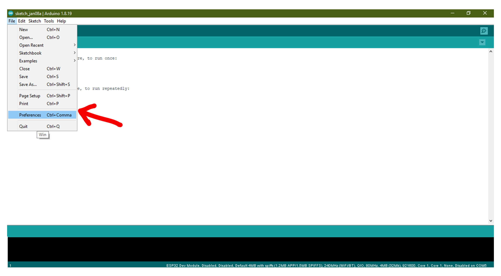
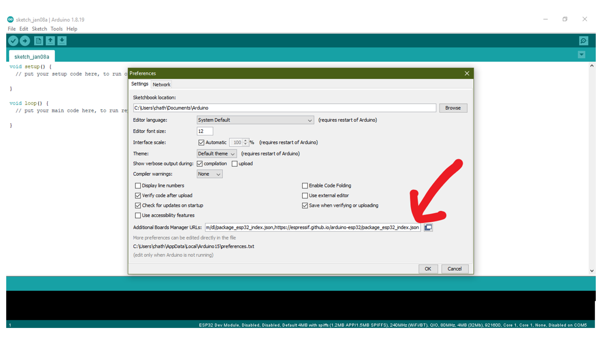
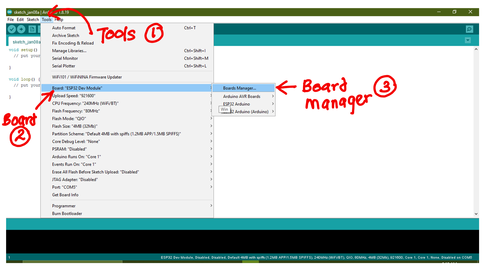
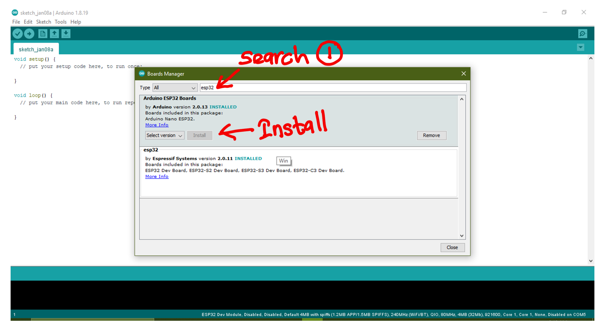
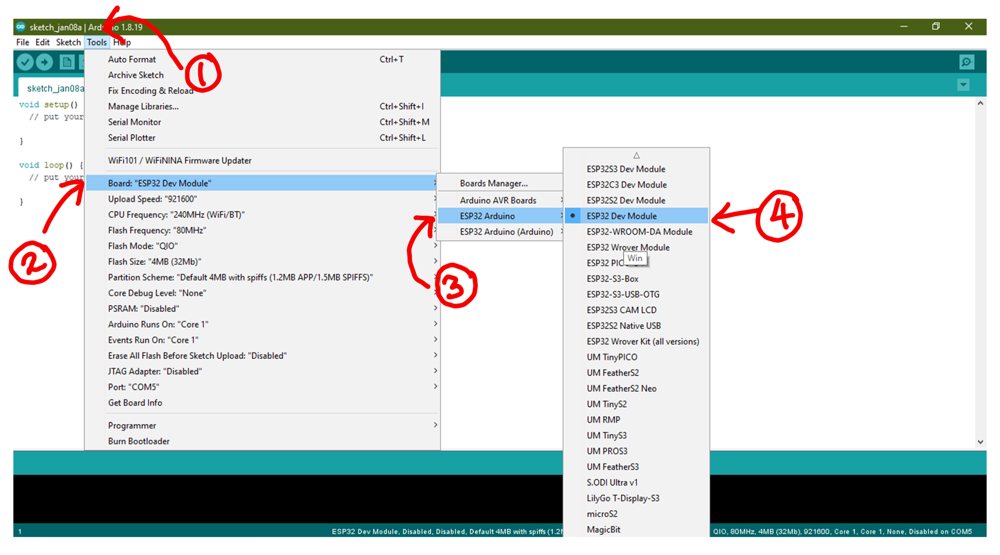
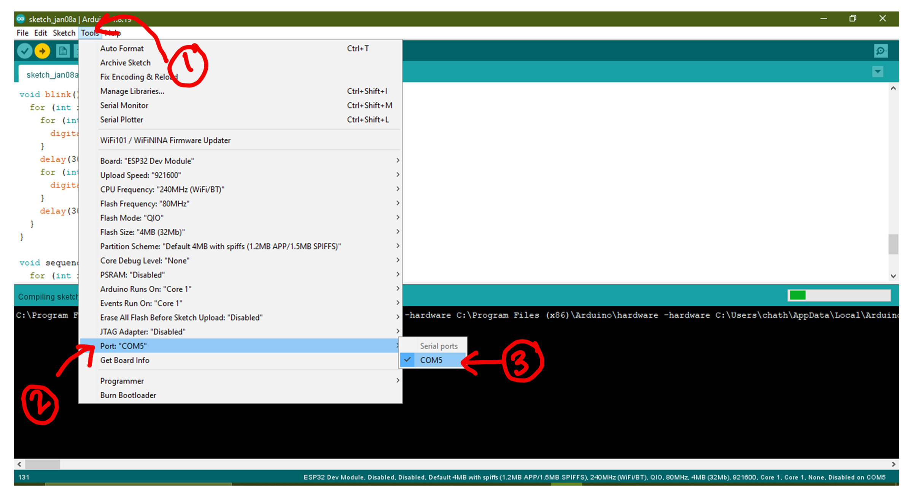
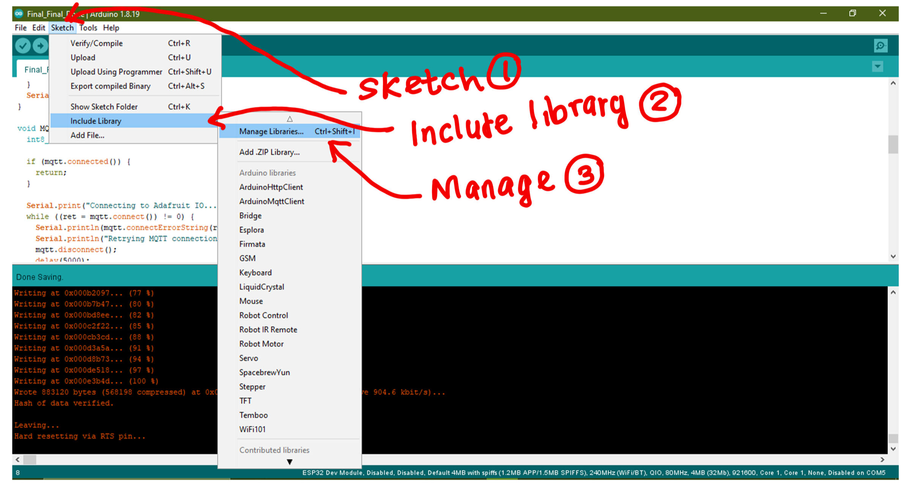
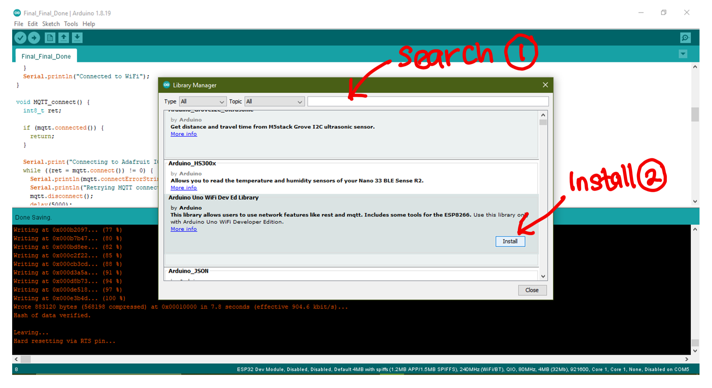
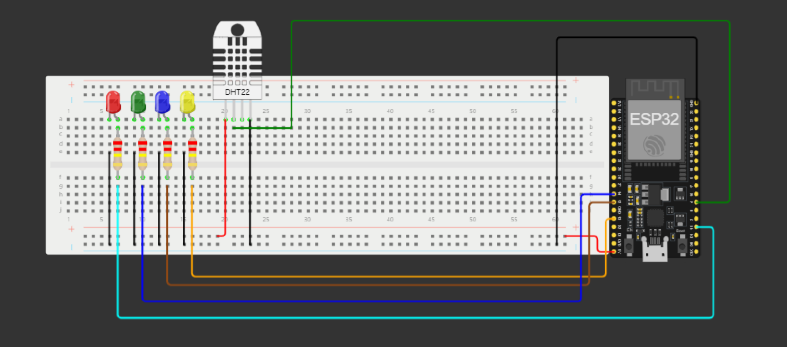

IOT stands for Internet of Things, which is a network of physical
devices that can collect and share data using sensors and software.
IOT devices can communicate with each other and with other
internet-enabled devices, creating a vast network of interconnected
devices that can perform a variety of tasks autonomously.
IOT has many applications in different industries and domains, such as
smart homes, wearable technologies, personal medical devices,
autonomous vehicles, and more.
IOT can help businesses improve efficiency, productivity, and
profitability by automating and optimizing processes, generating
insights from data, and reducing costs.
Open the Arduino interface --> click on file --> go to
preferences

ADDITIONAL BOARD URL
If you are using esp32 copy and paste below links to additional board
manager URL .

BOARD MANAGER
go to Tools --> Boards --> Boards Manager

INSTALLING BOARDS
Search Esp32 --> install library according to your board. in this
case library by espressif

CHOOSE BOARD
Go to Tools --> Board --> ESP32 Arduino --> ESP32 Dev Module

PORT
Go to tools --> Port and your communication Port

INSTALLING ADDITTIONAL LIBRARIES
Open the Arduino interface --> click on file --> go to
preferences


CIRCUIT DIAGRAM
Open the Arduino interface --> click on file --> go to
preferences

Code Breakdown
Overview
This code control a set of 4 LEDs using an ESP32 microcontroller.
It employs the DHT11 sensor to measure humidity and temperature
and prints this data to the serial monitor. The LED control is
based on predefined patterns that are cycled through at specific
time intervals.
Setup Function
Initializes serial communication at 9600 baud rate.
Begins communication with the DHT11 sensor.
Sets up the GPIO pins connected to the LEDs as output and
initializes them as LOW (turned off).
Loop Function
Retrieves the current time in milliseconds (currentMillis).
Tracks the start time of the LED pattern (patternStartTime) and
LED off time (offTime).
Defines the durations for the LED patterns (patternDuration) and
LED-off periods (offDuration).
Checks if it's time to execute the pattern or turn off LEDs based
on the defined durations.
Calls functions to execute LED patterns and read sensor data.
Pattern Execution Function (executePattern)
Chooses the appropriate LED pattern based on patternIndex:
allOn: Turns all LEDs ON simultaneously.
alternate: Alternates between turning ON and OFF every other LED.
blink: Blinks all LEDs together in a synchronized manner.
sequence: Lights up LEDs in sequence, one after the other.
Sensor Reading Function (readSensorData)
Reads humidity and temperature data from the DHT11 sensor.
Prints the humidity and temperature values to the Serial Monitor.
LED Pattern Functions (allOn, alternate, blink, sequence)
allOn: Turns all LEDs ON.
alternate: Alternates LEDs ON and OFF in pairs.
blink: Blinks all LEDs.
sequence: Lights up LEDs one after another in sequence.
LED Pattern Functions (allOn, alternate, blink, sequence)
Turns off all the LEDs.
Full Code
Uploading the code to IDE
After completing code click on the upload button. and wait for code to
get uploaded.